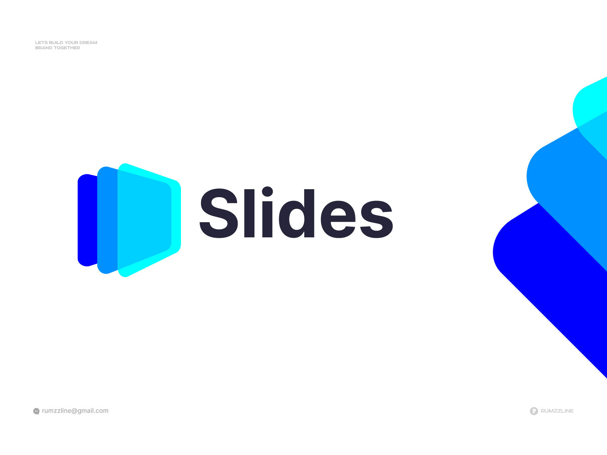
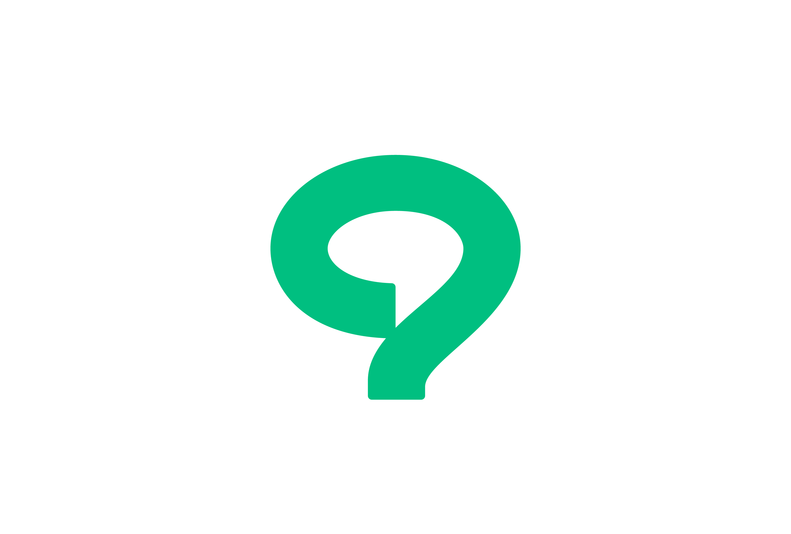
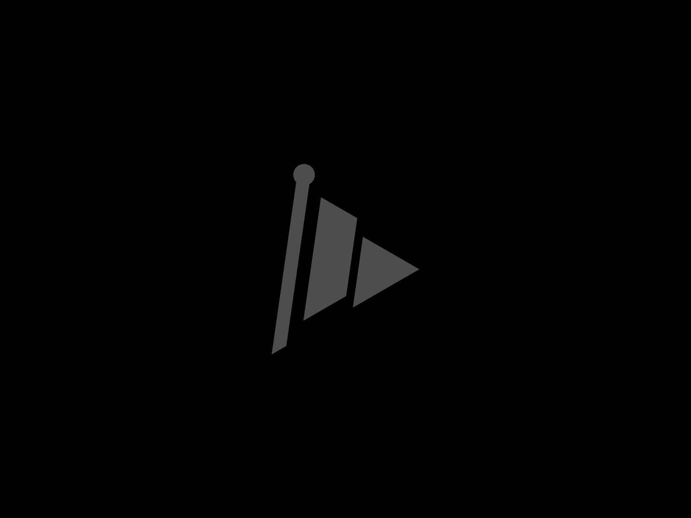
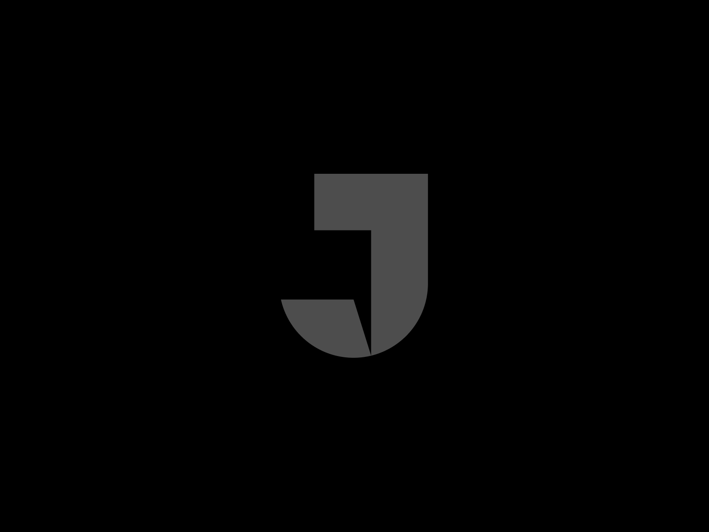
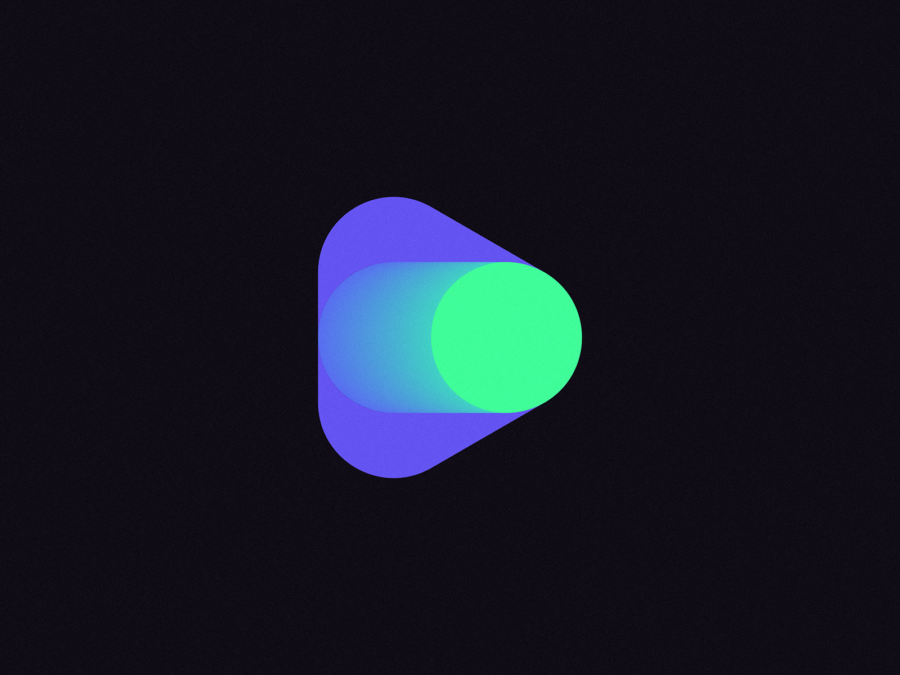
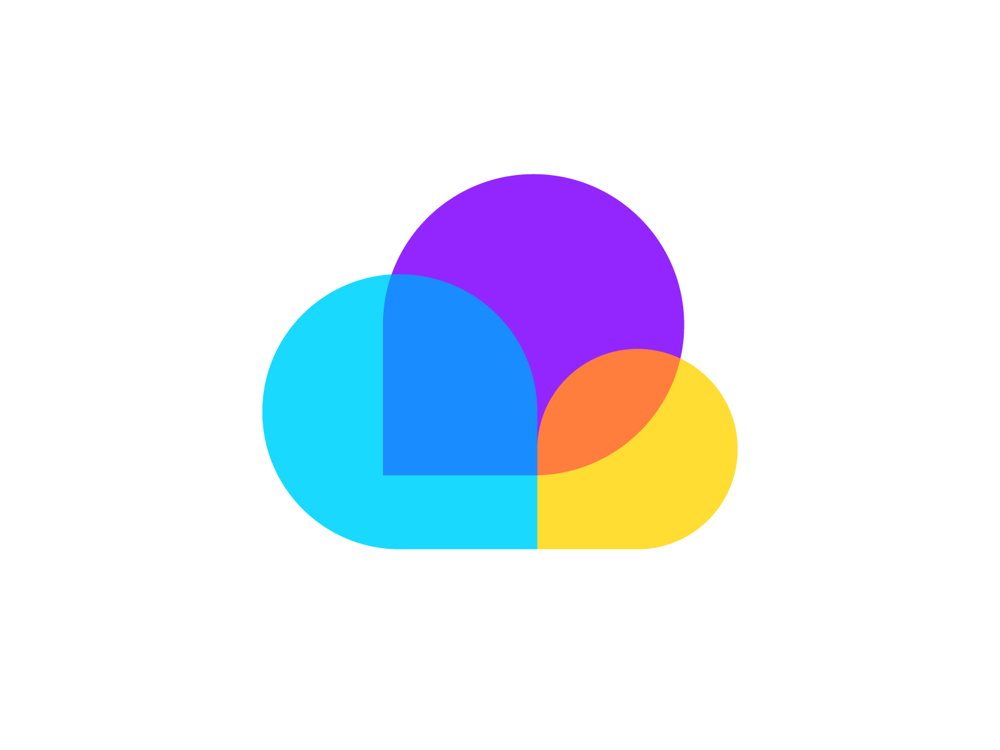
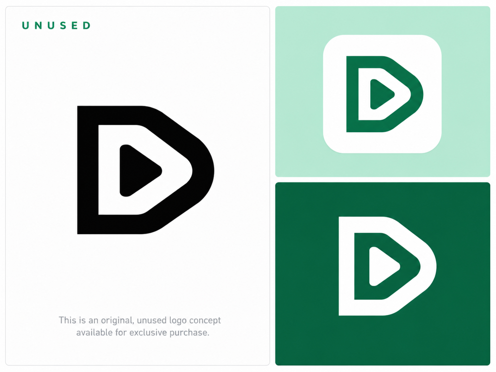
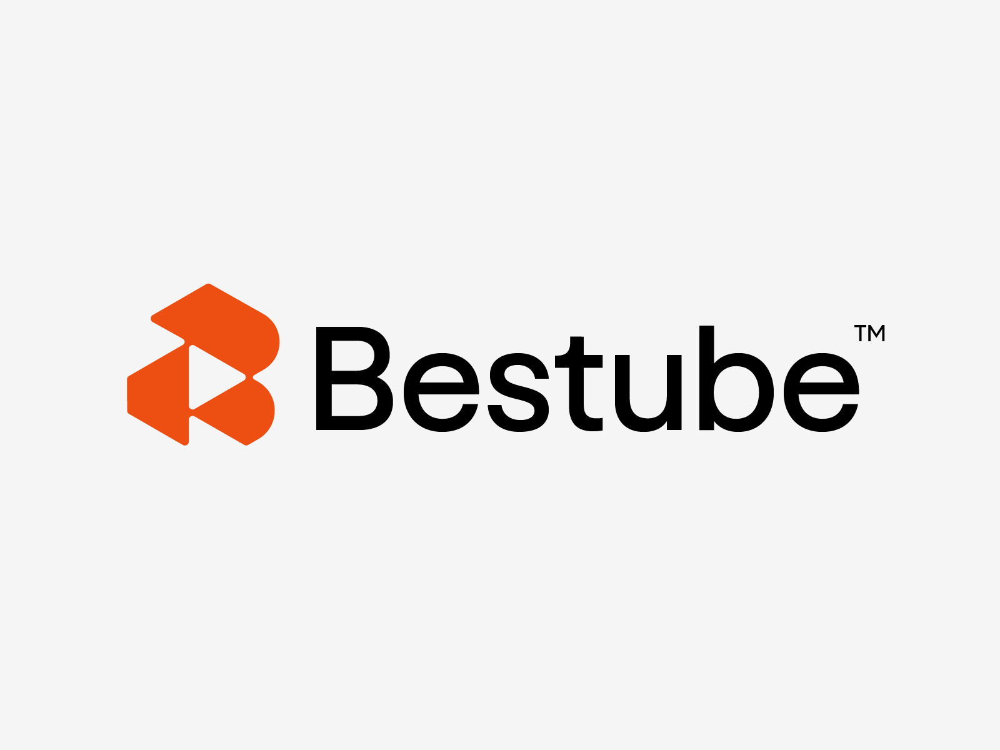
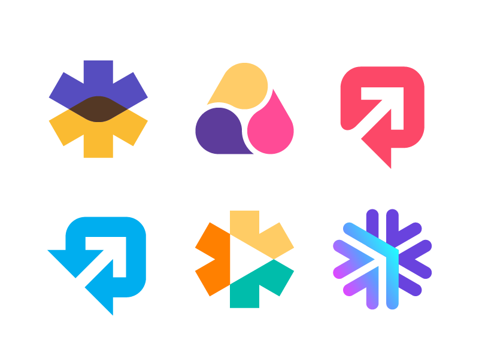
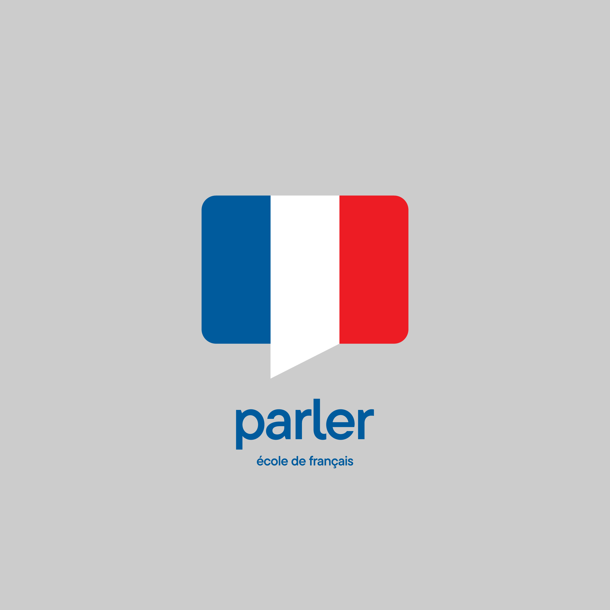

01 · 슬라이드
Slide Logo - Software App Logo - Brand Identity
Ahmed Rumon
둥근 사각 패널 3장이 겹치는 구조. 발표 자료와 화면 전환을 직접 연상시켜 서비스 주제와 가장 가깝다.
참고 포인트 패널 수, 간격, 겹침만으로 심볼을 구성하는 방식. 워드마크를 제외한 왼쪽 심볼을 참고.
단순한 도형으로 표현한 발표 · 발화 · 연습 · 질문의 심볼 10선. 2026-11-12 수집.

Ahmed Rumon
둥근 사각 패널 3장이 겹치는 구조. 발표 자료와 화면 전환을 직접 연상시켜 서비스 주제와 가장 가깝다.
참고 포인트 패널 수, 간격, 겹침만으로 심볼을 구성하는 방식. 워드마크를 제외한 왼쪽 심볼을 참고.

Anton Akhmatov
곡선으로 이루어진 물음표와 말풍선의 여백을 결합한 단색 심볼. 모의 심사 질문과 피드백 기능에 연결하기 좋다.
참고 포인트 실루엣 하나에 질문과 발화의 의미를 함께 담는 네거티브 스페이스.

Viktor Snopčok
가는 막대, 사선 사각형, 삼각형의 조합. 재생 버튼과 깃발을 동시에 읽을 수 있어 연습 시작과 목표 달성을 연상시킨다.
참고 포인트 기울기와 도형 사이 간격으로 방향성을 만드는 방식.

Viktor Snopčok
직사각형과 둥근 하단을 결합한 단색 기하 심볼. 내부의 삼각형 여백으로 말풍선의 꼬리를 암시한다.
참고 포인트 문자 자체보다 직선·곡선·삼각 여백이 결합하는 원리를 참고.

Dmitry Lepisov / Lepisov Branding
둥근 삼각형, 캡슐, 원이 결합한 심볼. 재생과 상태 전환을 함께 연상시켜 시뮬레이터의 실행 동작과 연결된다.
참고 포인트 기본 도형을 겹쳐 두 가지 의미를 만드는 방식. 원본에는 그라데이션이 있으므로 형태 중심으로 참고.

Kakha Kakhadzen
둥근 사각형과 원호 형태를 겹친 평면 심볼. 여러 화자의 대화나 청중과의 상호작용을 연상시킨다.
참고 포인트 같은 계열의 둥근 도형을 크기와 색만 바꿔 조합하는 방식.

ABIDA SULTANA NISA / LOGOHAUS
둥근 D형 외곽과 안쪽 삼각형이 결합한 평면 심볼. 단색 버전에서도 재생의 의미가 분명하다.
참고 포인트 외곽 프레임과 내부 도형의 간격, 단색 실루엣.

Zikospace
각진 다각형 두 개와 삼각형 여백으로 구성된 심볼. 텍스트 없이도 방향성이 드러난다.
참고 포인트 서로 맞물리는 도형과 중앙 여백의 균형. 워드마크를 제외한 왼쪽 심볼을 참고.

Kakha Kakhadzen
여섯 가지 심볼 탐색 중 오른쪽 위와 왼쪽 아래의 말풍선+대각 화살표를 선정. 둥근 사각형과 화살표 여백으로 표현된다.
참고 포인트 발표 후 향상과 피드백을 말풍선에 결합하는 방식. 원본 탐색 시트를 그대로 보존.

Goce Veleski
가로 직사각형을 세로 패널로 나누고 가운데 패널을 말풍선 꼬리처럼 연장한 구조. 단순한 면 분할로 발화를 표현한다.
참고 포인트 사각 패널에 꼬리 하나만 더해 의미를 만드는 방식. 국기 색과 워드마크보다 상단 심볼의 구조를 참고.
각 원작자의 디자인 참고 자료입니다. 실제 서비스 로고는 별도로 디자인합니다.